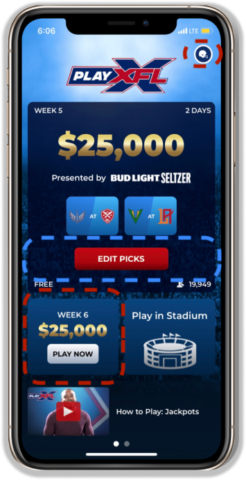

Value Proposition: Facilitating users' ability to invest in future contests and explore past standings will increase engagement with the application.
Current Design
Pros
- Simple and to the point
- Good at leading users to make a prediction for the current week
Drawbacks
- Difficult for users to find previous week’s results as they have to naviagate deep into the settings section
- Does not emphasize making predictions for the following week. The following week's suggestions are represented by a small box on the home screen.

Proposed Design
- Introduces weekly navigation to explore current and future predictions
- The design tweak gives the app a more open feel, which will increase engagement with future predictions
- The enhancement will also make it easier to view winners from past weeks